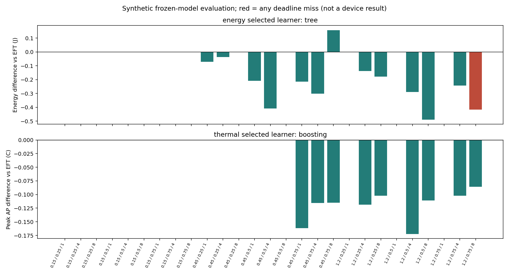

PC 합성입력 평가. 실측 절감·strict 검증·기한 보장 아님. 미래 trace/실현 처리시간을 선택기에 입력하지 않음.
이전48요청과 다음48요청이 같은 부하 분포라는 가정. 이전 이력의 열은 이어붙이지 않고 동일 initial0 사용. 콜드스타트·분포 변화·요청별 정책 전환·다른 AP 초기조건은 미검증. EFT fallback도 서비스 보장 아님.
18부하 조합·36이력으로 학습,9조합 통째 제외. 저장 자료로 두 모형 선정 후 새2seed×27조합×3처리문맥 확인. 학습에 쓰지 않은 조합도 이전 연구에서는 본 조건이며 물리모형의 독립 실기기 확인이 아님.
| 모형 | 목적 | 기준 | 기한충족 | 요청분모 | 전 요청 충족 사례 | 기준보다 서비스 악화 | ΔJ | Δ최고AP |
|---|---|---|---|---|---|---|---|---|
| tree | energy | EFT_REFERENCE | 6772 | 7776 | 100 | 5 | -0.105158 | 0.053325 |
| tree | energy | SPLIT_REFERENCE | 6772 | 7776 | 100 | 4 | -0.657564 | -0.101093 |
| tree | energy | CPU_REFERENCE | 6772 | 7776 | 100 | 5 | -0.368757 | 0.185278 |
| boosting | thermal | EFT_REFERENCE | 6788 | 7776 | 105 | 0 | 0.086789 | -0.040130 |
| boosting | thermal | SPLIT_REFERENCE | 6788 | 7776 | 105 | 4 | -0.465616 | -0.194548 |
| boosting | thermal | CPU_REFERENCE | 6788 | 7776 | 105 | 0 | -0.176810 | 0.091823 |

음수는 해당 비용 감소. 에너지/열 목적 그림은 다른 선택이며 공동 개선을 뜻하지 않음.